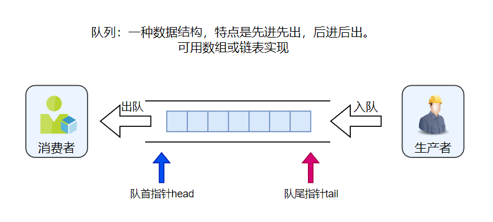
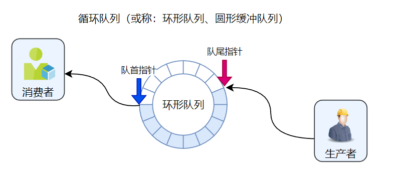
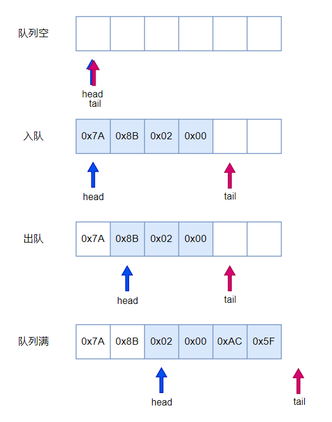
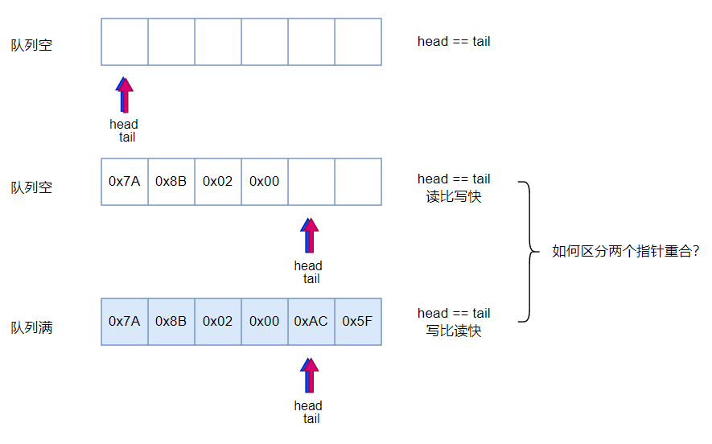
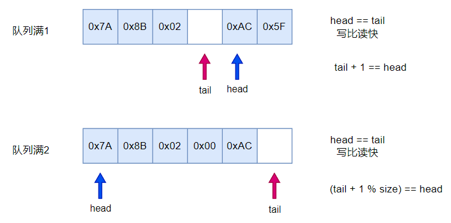

<!DOCTYPE lake>
<p data-lake-id="u44ebb67f" id="u44ebb67f"><span class="lake-fontsize-11" data-lake-id="uf663e08b" id="uf663e08b" style="color: rgb(36, 41, 47)">环形队列 (Circular Queue) 是一种数据结构（或称循环队列、圆形队列）。它类似于普通队列，但是在环形队列中，当队列尾部到达数组的末尾时，它会从数组的开头重新开始。这种数据结构通常用于需要固定大小的队列，例如计算机内存中的缓冲区。循环队列可以通过数组或链表实现，它具有高效的入队和出队操作。</span></p><p data-lake-id="ued27753f" id="ued27753f"><span class="lake-fontsize-11" data-lake-id="u3a461d1f" id="u3a461d1f" style="color: rgb(36, 41, 47)">​</span><br/></p><h2 data-lake-id="x8VDb" id="x8VDb"><span data-lake-id="u7c49bc35" id="u7c49bc35" style="color: rgb(36, 41, 47)">队列和循环队列</span></h2><p data-lake-id="u2333ceda" id="u2333ceda"></p><p data-lake-id="u846339a2" id="u846339a2"></p><p data-lake-id="u271d6e3f" id="u271d6e3f"><br/></p><h2 data-lake-id="mUfy2" id="mUfy2"><span data-lake-id="ud9de1d02" id="ud9de1d02">队列的几种状态</span></h2><p data-lake-id="u53096ea8" id="u53096ea8"></p><p data-lake-id="ue162fabd" id="ue162fabd"><br/></p><h2 data-lake-id="wfd1G" id="wfd1G"><span data-lake-id="u7aab4dc8" id="u7aab4dc8">区分循环队列空和满</span></h2><p data-lake-id="uc92fa51d" id="uc92fa51d"></p><ul list="u5a4fda71"><li data-lake-id="uc9441f4a" fid="uc34d99a5" id="uc9441f4a"><span data-lake-id="ufc3a1dc7" id="ufc3a1dc7">tail 追上head指向 head 前一个位置时，判定为队列满</span></li><li data-lake-id="u8c1f5e0a" fid="uc34d99a5" id="u8c1f5e0a"><span data-lake-id="u83f43ea0" id="u83f43ea0">数组中保留一个空位置，以示区分</span></li></ul><p data-lake-id="ue90a65a0" id="ue90a65a0"></p><p data-lake-id="uc87eed42" id="uc87eed42"><span data-lake-id="u017a223c" id="u017a223c">​</span><br/></p><h2 data-lake-id="LLpf4" id="LLpf4"><span data-lake-id="u1a8fa72c" id="u1a8fa72c">代码实现</span></h2><h3 data-lake-id="QK0D1" id="QK0D1"><span data-lake-id="ucb648134" id="ucb648134">头文件</span></h3><span class="yuque-card-unsupported">[codeblock]</span><h3 data-lake-id="D69bj" id="D69bj"><span data-lake-id="uff2b6392" id="uff2b6392">初始化队列</span></h3><span class="yuque-card-unsupported">[codeblock]</span><h3 data-lake-id="ihpeT" id="ihpeT"><span data-lake-id="u43cdb8ba" id="u43cdb8ba">数据入队</span></h3><span class="yuque-card-unsupported">[codeblock]</span><h3 data-lake-id="adoif" id="adoif"><span data-lake-id="ucb68570b" id="ucb68570b">数据出队</span></h3><span class="yuque-card-unsupported">[codeblock]</span><h3 data-lake-id="e36HB" id="e36HB"><span data-lake-id="ua9ad3f78" id="ua9ad3f78">获取数据个数</span></h3><span class="yuque-card-unsupported">[codeblock]</span><h3 data-lake-id="Oz5XI" id="Oz5XI"><span data-lake-id="uff0aedd8" id="uff0aedd8">一组数据入队出队</span></h3><span class="yuque-card-unsupported">[codeblock]</span>